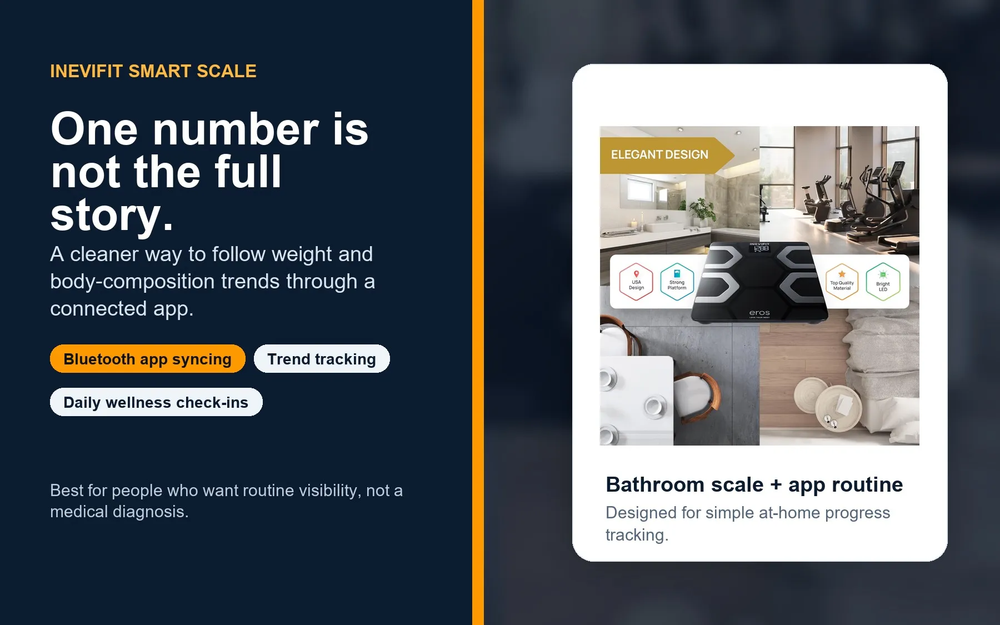
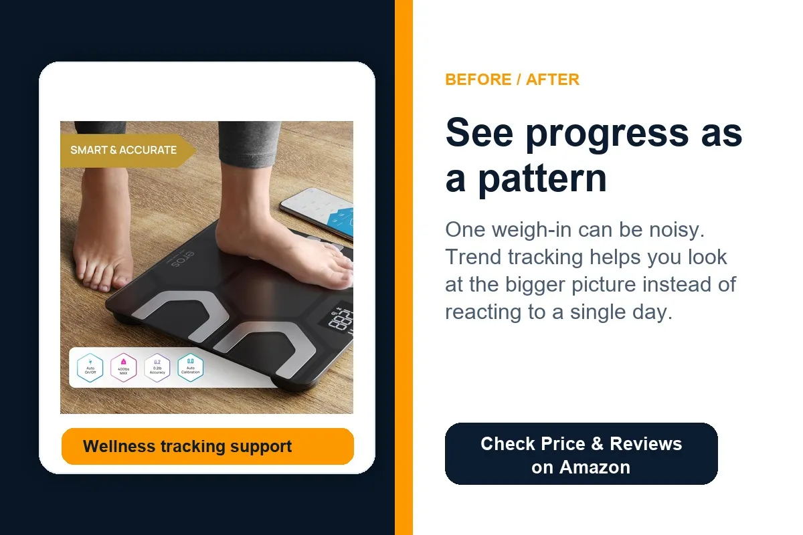
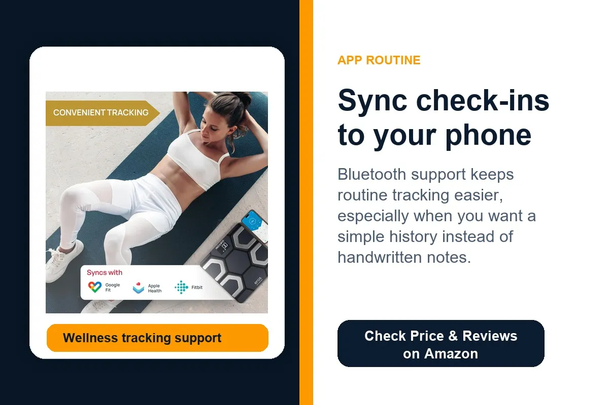
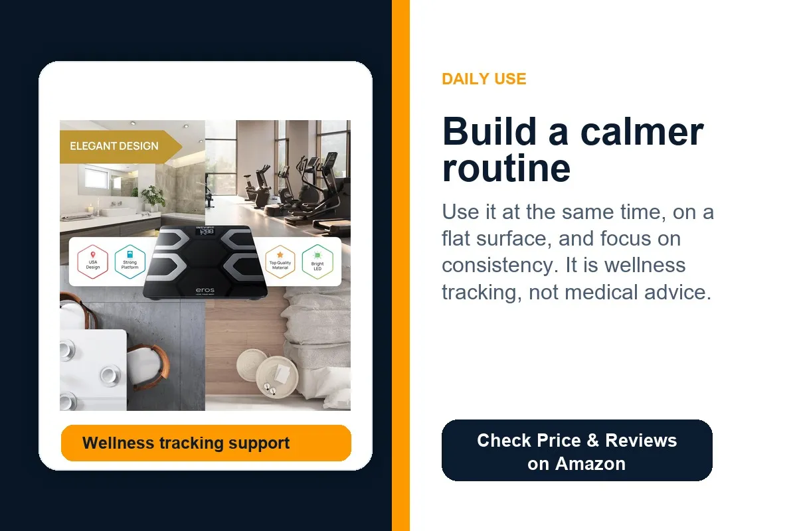

Less guessing from memory
Bluetooth syncing keeps your check-ins organized, so you are not trying to remember last week’s number.
The INEVIFIT Bluetooth Body Fat Scale is for people who want app syncing, cleaner check-in history, and a calmer way to follow weight and body-composition trends at home.
This is an editorial affiliate page. The product is sold on Amazon, not directly by The Merchant. Always check the live listing for current specifications, app compatibility, setup guidance, price, and availability.

One weigh-in can move because of water, timing, meals, training, travel, sleep, or hormones. That makes it easy to overreact to one reading when the real story is the pattern over time.

Bluetooth syncing keeps your check-ins organized, so you are not trying to remember last week’s number.
Daily numbers can bounce around. Looking at patterns helps you understand whether your routine is moving in the right direction.
Keep the scale on a hard, flat surface and check in consistently without building a complicated tracking system.
The goal is not obsessing over body metrics. The point is creating cleaner visibility when you already want to track your wellness routine.

A basic scale gives you one number and leaves you to decide what it means without useful history.
App tracking can make it easier to compare weeks and focus on direction instead of reacting to one check-in.
Use the scale as a routine awareness tool, not as a daily pass/fail test.
A smart scale makes the most sense when you are trying to build habits and want your check-ins stored automatically instead of scribbled down or forgotten.

Weighing at a consistent time can make your data more useful than random check-ins during the day.
Trend lines can help you avoid overreacting to water weight or normal day-to-day movement.
This is for personal wellness tracking. It should not replace guidance from a qualified healthcare professional.
Clear buying angles without star ratings, review scores, or Amazon-review language.
Useful when you want check-ins saved in one place instead of depending on memory.
A better fit for people who want to compare patterns over time instead of one daily number.
A bathroom-friendly tool for people building a more consistent wellness routine.
When used properly, the scale can support awareness without turning one reading into a big deal.
Works best for people who already want to track and prefer a structured app-based approach.
A practical home wellness upgrade for someone who likes organized tracking and smart devices.
A smart scale is useful only if it supports your goals in a balanced way. If body metrics make you anxious, a simpler approach may be better.
Check the live Amazon listing for current dimensions, app details, Bluetooth setup, supported metrics, batteries or power details, price, and return policy before ordering.
The useful part is consistency. Do not let one number control the whole day.
Put the scale on a hard, flat surface so your check-ins are more consistent.
Connect the scale to the app first and confirm your check-ins are being saved.
Compare patterns over weeks instead of judging one weigh-in.
Simple shopping guidance before clicking through.
No. It is for personal wellness tracking and routine awareness. It should not replace advice from a doctor, dietitian, or qualified healthcare professional.
Bluetooth syncing can make tracking easier because your check-ins and trends are stored in an app instead of relying on memory or manual notes.
Use it on a consistent schedule that feels healthy for you. Many people prefer the same time of day and focus on trends rather than single-day changes.
Check current app compatibility, supported metrics, size, batteries or power details, setup guidance, price, and Amazon availability.
View the live Amazon listing for current price, app compatibility, specifications, setup details, and availability before ordering.